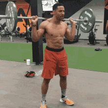

Жим лежачі

Це відмінна базова вправа, яка направлена насамперед для опрацювання жимових м'язів - грудних, передніх дельт плечей, тріцепсів (вспоміжні м'язи - широчайші м'язи спини та трапеція допомагають стабілізувати тіло при виконанні вправи).
Лава встановлена паралельно підлозі, атлет лягає на неї спиною так, щоб голова і тулуб, від потилиці до нижньої частини корпусу, щільно прилягали. Ноги згинаються в колінах під кутом і розставляються на ширину плечей, поперек трохи вигинається, а м'язи преса потрібно напружити. Треба уникати надмірного прогину в спині, це може призвести до травми. Зважаючи на це новачкам не рекомендується відривати сідниці від лави.Штанга береться середнім хватом, щоб кисті були трохи ширше рівня плечей. Гриф щільно обхоплюється руками, найсильніше стискаються великий, середній і вказівний пальці. Вага має припадати на долоні. Під час виконання жиму потрібно працювати не тільки руками, але і лопатками, звівши їх разом (стабілізація). Важливо стежити, щоб в попереку був невеликий прогин. Переконайтеся, що ноги стійко стоять на підлозі та розставлені ширше рівня плечей. Основний упор повинен йти на п'яти. Зніміть штангу зі стійки і приведіть її трохи нижче ваших грудей прямо по діагоналі, локті мають згинатись не більше ніж на 45 градусів.
Присідання
Присідання зі штангою - це найкраща вправа для розвинення кріпких і сильних ніг, а як відомо, жодний дім не стоїть без міцного фундаменту. Тому ця вправа - вкрай необхідня для гармонійного розвитку тіла. Основні м'язи - квадріцепси, стабілізуючі - сідниці, біцепс стегна, спина.
Розташуйте ноги на ширині плечей. Правильне положення для присіду – розставлені на ширині плечей ноги зі злегка розведеними носками. Виконання вправи з широко розставленими ногами – не рекомендується, так як навантаження, що виникає при цьому, значно збільшується. Присідайте до паралелі. При досягненні нижньої точки присіяду стегна повинні бути паралельні підлозі, а коліна розташовуватись не далі лінії носків. Також варто стежити за тим, щоб присяд не закінчувався надто високо або навпаки – низько. Піднімайтеся вгору з допомогою м’язів, а не колін. Підйом вгору повинен починатися з сідниць, після чого слідує розпрямлення колін і корпусу. Рух, який починається з колін – помилково, він порушує механіку виконання вправи і може призвести до травм. Тримайте прес у тонусі. У перервах між повтореннями, досягаючи верхньої точки руху, не розслабляйте коліна і не переносіть вагу на носки. Стійте рівно, стежте за диханням і тримайте затиснутим прес.
Станова тяга

Тяга - одна з найкращих базових вправ у арсеналі кожного атлета, бо вона застосовує найбільшу кількість і масу м'язів тіла. Ця вправа допомагає виправити дефекти осанки і розвинути міцний корпус. Основні м'язи: сідниці, широчайші м'язи спини, трапеція, м'язи-випрямляючі хребет, передпліччя, допоміжні - біцепс стегна, квадріцепс.
Ступні поставте трохи вужче плечей. Носки можна трохи розвернути назовні. Якщо ви розставите ступні ширше (мовляв, щоб зміцнити стійку), то тим самим лише нашкодите собі. Підйом з позиції присівши робиться силою квадрицепсів. Ці м’язи проявляють максимальне зусилля в тому випадку, коли ступні стоять близько. Поставити їх зовсім щільно у вас не вийде, тоді постраждає рівновага. Стійка вужче плечей – це компроміс між стійкістю і «вигідною» позицією ступень. Далі вам потрібно близько підкотити до себе штангу. Гриф повинен знаходитися над підйомами ступень і майже торкатися ваших кісточок. Перед стартом вам потрібно опуститися в позицію глибокого присіду, коли колінні суглоби зігнуті під кутом 45 градусів. Груди слід наповнити глибо вдихнувши, плечі розпрямити. Прес повинен бути напружений статично. Розпряміться зі штангою, імітуючи рух "вдягання штанів".